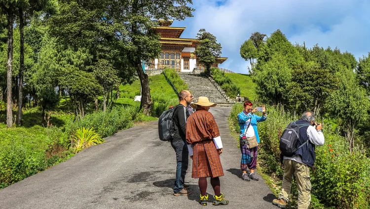

Mission
Discover Bhutan!
Thuen Lam Hub is a site where the tourists including Bhutanese people can explore places within Bhutan. This site allows people to get more information on Bhutan. The people can also refer to the GMC page to know more about the ongoing project and how you can help with it.
This website can help people to visit the places time to time!
